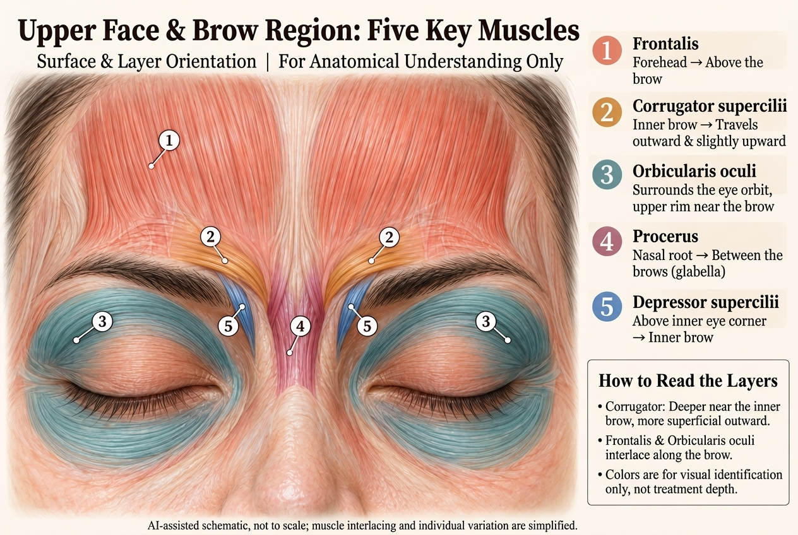
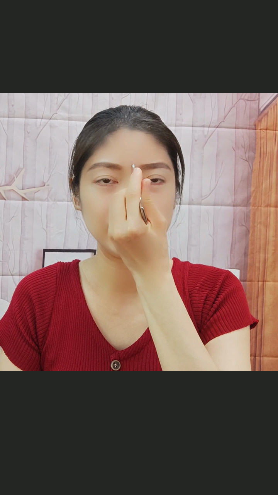
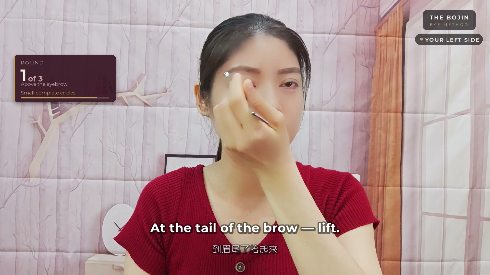
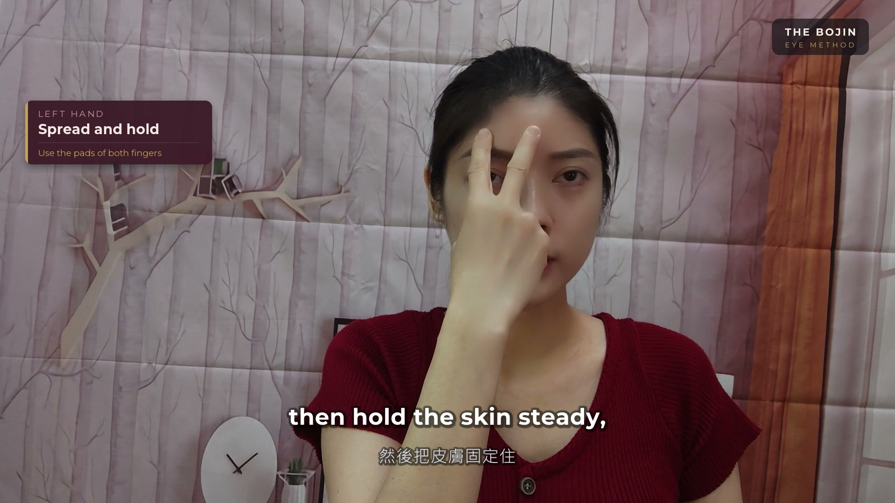
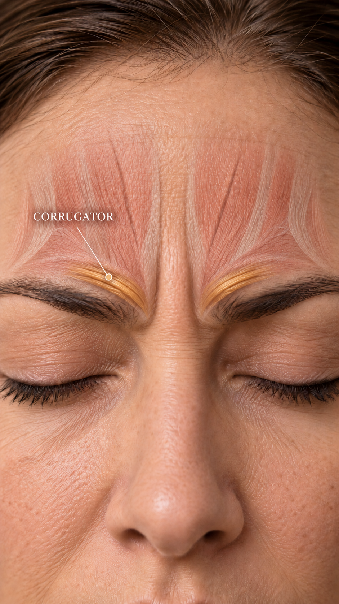

REGION 01 OF 03 · BROWS & FOREHEAD · IN-DEPTH GUIDE (PARTS 01–06)
A small area at the inner brow. Worth a closer look.
See the movement. Understand the detail.
Region 01 of our eye series: Brows & Inner Brow. Scroll through 6 structured parts: Expression → 5-Muscle Map → Movement Comparison → Glide Preparation → 5 Detail Q&As → Full Sequence Orientation. Use the sticky navigator above to jump between parts at any time.
Not upset. Still frowning?
Reading a message. Finishing one last task. Then you notice your brow. Start with this familiar expression.
Just watch first. The opening seconds highlight the inner brow area, followed by the teacher demonstrating small circles along the brow.
👇 Now that you have seen the expression, let’s take 10 seconds to see which muscle is working underneath.
Next: Part 02 · 5-Muscle Map ↓One brow area. More than one muscle.
Use this five-muscle illustration to get oriented, then focus on the inner brow. It is a map for understanding muscle flow.
The illustration names the frontalis, corrugator, orbicularis oculi, procerus and depressor supercilii. Here we focus on the gold corrugator (#2) and its role in drawing the brows inward.
② Corrugator supercilii · Inner brow outward (Main focus)
Draws the eyebrows inward and downward when frowning or concentrating.
Choose a muscle to spotlight its approximate location. The spotlight is not an exact muscle boundary or treatment area. AI-assisted illustration; not to scale.
👇 Once you see how the corrugator runs, the key question is: why does the teacher draw a complete small circle instead of swaying side to side?
Next: Part 03 · Movement Comparison ↓Key Difference: A complete small circle vs. a side-to-side sway?
Same teacher, same demonstration angle. Switch between the complete circle, side-to-side sway, or simultaneous dual view.
This comparison is specific to the above-brow circle pass. Watch the supporting hand, the completed small circle, and the outward move. Other steps use different motions; side-to-side movement is not a universal mistake.
Observation excerpt, not a complete practice. Check Part 04 below for the glide check before trying.

Yu-Ting Lan · Founder of Héhé Studio & International Bojin Instructor
Teaching gentle facial bojin since 2015 to over 1,000 students. She uses a smooth, rounded-tip bojin tool—emphasizing skin stabilization and rhythmic circles rather than aggressive scraping.
👇 Now that you can spot the difference, do not put a tool directly on dry skin! Scroll down to see the essential glide check before touching the brow.
Next: Part 04 · Cheek Glide Check ↓Before practice: 33s demo of the 10-second cheek glide check
Preparation is an integral part of the method. The outer-cheek demonstration checks slip and control only. Review the original course preparation requirements before practising.
This excerpt demonstrates how to confirm slip and hand control. A glide check does not replace the preparation requirements or the full course safety checklist.
Before practice: preparation requirements from M1
These reminders summarize M1 at 00:28–00:59. The glide check is only one part of preparation; read the full course safety checklist before practising.
- The original lesson says not to use this method with glaucoma, retinal problems, high myopia, or recent eye surgery, including laser vision correction.
- For recent fillers or Botox around the eyes, or inflamed skin, the lesson says to wait until the condition is stable and consult your doctor first.
- This page offers observation excerpts and course context, not a complete guided routine or a tool-depth guide.
Want to unlock the free 3-minute “Inner Brow Release” video?
Access our free 3-minute video guide with Yu-Ting Lan, demonstrating gentle home release for the brow and forehead area.
Unlock Free 3-Minute Video → 🔒 100% Free & Secure. Watch the preview before deciding whether to practise.
👇 Beyond slip and preparation: Where is the exact starting point? What does the other hand do? Click any of the 5 detail questions below to watch inline.
Next: Part 05 · 5 Brow Detail Questions ↓5 Common Brow Detail Questions (Click to watch inline)
No need to leave this page—click any question below to open the teacher’s demonstration clip or illustration right here.

Where does the very first brow circle begin?
Watch the exact starting landmark the teacher points to, then notice the direction of travel.
This shows the starting point specifically for the brow-circle pass. Other passes begin at distinct landmarks.

What happens at the tail of the brow?
Notice how the teacher cleanly lifts the tool at the outer brow and resets to the starting point.
Focus on the one-way outward progression and the lifted return. Separating the pass from the reset prevents skin dragging.

Don’t just watch the tool—what is the other hand doing?
This time, focus on the finger pads and vertical V posture of the supporting left hand.
The teacher stabilizes the skin using the index and middle finger pads in a vertical V. Without this support, the skin shifts easily.
In the next brow step, is the thumb measuring or anchoring?
See how the teacher uses the thumb anchor in another part of the brow sequence.
This supports a distinct step in the sequence—it does not replace the circles with a side-to-side sway.

Where is the gold-highlighted corrugator muscle?
Zooming in on our main subject: the corrugator supercilii at the inner brow.
Gold indicates the corrugator in this illustration. It provides a visual landmark for location and orientation rather than isolated deep force.
👇 Now that you have seen the individual pieces, see how the teacher connects the sequence into a complete practice.
Next: Part 06 · Full Sequence ↓Connect isolated details into a calm, complete practice.
You have seen the muscle location, the difference between a circle and a sway, and the glide check. The full course connects these pieces into a complete, safe eye reset system.
Watch the 29-second course orientation. The five steps in the original lessons are (Step 1 Above the Brow, Step 2 Lower Brow Edge, Step 3 Upper Orbital Rim, Step 4 Side of the Nose, Step 5 Lower Orbital Rim; followed by a separate soothing finish). This orientation shows how a single pass fits into the whole sequence.
THE BOJIN EYE METHOD · GUIDED SELF-PRACTICE
Ready to learn the complete 5-step eye sequence?
Build on this brow detail with five passes for both eyes, supporting-hand guidance, and a soothing finish.
8 Structured Modules
From safe preparation to detailed step-by-step guidance and daily follow-along.
Two-Hand Skin Support
Exact bony landmarks, pressure control, and stabilizing hand placement.
Tool vs. Hands-Only Preview
Full course teaches rounded-tool technique; the free 3-minute video uses hands only.
Explore these two essays on brow & forehead tension:
Understand how everyday screen habits and scalp tightness contribute to tension between your brows.

Forehead tension after screen time? Start with what you can notice ↗
Read full article →

The tightness in your scalp is showing up on your face ↗
Read full article →
Find Your Tightest Link (2-Min Quiz)
Take the two-minute quiz to find where your face holds its tension.